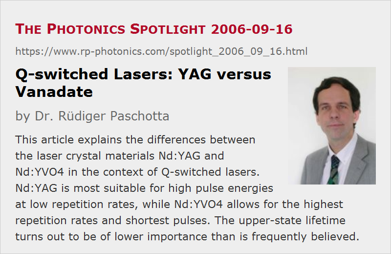

Q-switched Lasers: YAG versus Vanadate
Posted on 2006-09-16 as a part of the Photonics Spotlight (available as e-mail newsletter!)
Permanent link: https://www.rp-photonics.com/spotlight_2006_09_16.html
Author: Dr. Rüdiger Paschotta, RP Photonics Consulting GmbH
Abstract: This article explains the differences between the laser crystal materials Nd:YAG and Nd:YVO4 in the context of Q-switched lasers. Nd:YAG is most suitable for high pulse energies at low repetition rates, while Nd:YVO4 allows for the highest repetition rates and shortest pulses. The upper-state lifetime turns out to be of lower importance than is frequently believed.

Ref.: encyclopedia articles on Q switching, Q-switched lasers, saturation energy, upper-state lifetime, YAG lasers, vanadate lasers; G. J. Spühler et al., JOSA B 16 (3), 376 (1999)
Nd:YAG and Nd:YVO4 (neodymium-doped yttrium vanadate) are belonging to the most popular laser gain media. While their properties for continuous-wave operation are overall quite similar, these media are rather different for use in Q-switched lasers (and by the way, also for mode locking, even though for entirely different reasons). As a rule of thumb, Nd:YAG is more suitable for high pulse energies, while Nd:YVO4 is better for high pulse repetition rates.
But why exactly is this true? Many believe that the shorter upper-state lifetime of Nd:YVO4 is the reason, but this is less than half of the truth. A shorter upper-state lifetime limits the energy storage and thus the achievable pulse energies. However, the high gain of Nd:YVO4 can also be a limiting factor: for high pulse energies, it increases the demands on the Q-switch in terms of switching speed and hold-off loss.
Concerning high pulse repetition rates, the upper-state lifetime is actually not very important. It determines the rate of spontaneous emission, which is anyway weak in this regime. The factor of crucial importance is the high emission cross section of Nd:YVO4, which results in a low saturation fluence and (for a given mode area) in a low saturation energy. The latter enables to achieve a reasonably short pulse duration even for moderate pulse energies, as are possible at high repetition rates. The problem of Nd:YAG at high repetition rates turns out to be that the pulses get too long, or some pulses are left out due to too small gain. All this has nothing to do with the upper-state lifetime.
There are actually more differences between the materials. The very short pump absorption length of Nd:YVO4 allows one to construct Q-switched microchip lasers with very short cavity length, so that pulse durations far below 1 ns can be achieved. The record in this respect is 37 ps, see the reference above (Spühler et al.). In general, Nd:YVO4 will allow for shorter pulses than Nd:YAG for any given repetition rate.
This article is a posting of the Photonics Spotlight, authored by Dr. Rüdiger Paschotta. You may link to this page and cite it, because its location is permanent. See also the RP Photonics Encyclopedia.
Note that you can also receive the articles in the form of a newsletter or with an RSS feed.
Questions and Comments from Users
Here you can submit questions and comments. As far as they get accepted by the author, they will appear above this paragraph together with the author’s answer. The author will decide on acceptance based on certain criteria. Essentially, the issue must be of sufficiently broad interest.
Please do not enter personal data here; we would otherwise delete it soon. (See also our privacy declaration.) If you wish to receive personal feedback or consultancy from the author, please contact him e.g. via e-mail.
By submitting the information, you give your consent to the potential publication of your inputs on our website according to our rules. (If you later retract your consent, we will delete those inputs.) As your inputs are first reviewed by the author, they may be published with some delay.
|  |
If you like this page, please share the link with your friends and colleagues, e.g. via social media:
These sharing buttons are implemented in a privacy-friendly way!